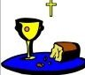

Videos, Photos...
-
My's Graduation
- Quan has been selected to become a member of the esteemed organization...

Truc's Graduation
Michelle's First Communion video

Michelle's First Communion photos
The origins of pho date back to the 1800’s. The Chinese and French added to the creation of the dish. China mainly supplied the Vietnamese with rice noodles and assorted spices and they adopted the tradition of eating rare meat from the French. The word “pho” is said to have derived from the French word pot au feu , which literally means “pot on the fire”. Chinese cooking, along with French cooking, greatly impacted and laid the basis for this unique cuisine of the Vietnamese people.
If one were to trace back to the birthplace of the dish, he or she would end up in the time period of French regime in Vietnam, formerly called French Indochina. The history of pho is considered fairly brief because the dish has only been around for 100 years or so. It originated from North Vietnam, along with France’s contribution by introducing the method of killing cows for meat. This soon gave rise to pho bac, the Vietnamese term for “pho of the north”. An initial dish, it primarily focused on the flavor of the broth, which was typically kept simple, yet savory. Since northern regions of Vietnam were scarce in ingredients, compared to the abundance of resources found in the South, the practice of making the most of what one had at hand was common for Northerners. As a result, pho bac would develop and be labeled as having a strong taste in the broth, consisting of various spices added in for subtle notes. There are little to no garnishes involved in the bowl.
When France’s reign over French Indochina came to an end near World War II, the country fell into the hands of Japan. Many refugees fled to the South, bringing with them their pho recipes. Since South Vietnam contains more accessible food sources in contrast to North Vietnam, the Southerners would adopt the idea of increasing the amount of ingredients in their bowl of pho. It would eventually lead to the creation of pho nam, which translates to “pho of the South”. Through trial and error, the Southerners found what had seemed as a dish could be modified to best suit any customer’s appetite.
One significant event in time, the Fall of Saigon, triggered the dispersion of many Vietnamese across the globe. Most of them made their way to The United States _some via boat, hence the term “boat people”. Not surprisingly, the refugees would carry with them their deep culture and distinctive cuisine: their beloved pho recipes. Eventually, the popularity of the Vietnamese dish would exceed expectation and began to flourish.
Pho is the representational food of the working people. It is a mirror that reflects Vietnamese heritage and the unification of people.
Francis AnhQuan Pham